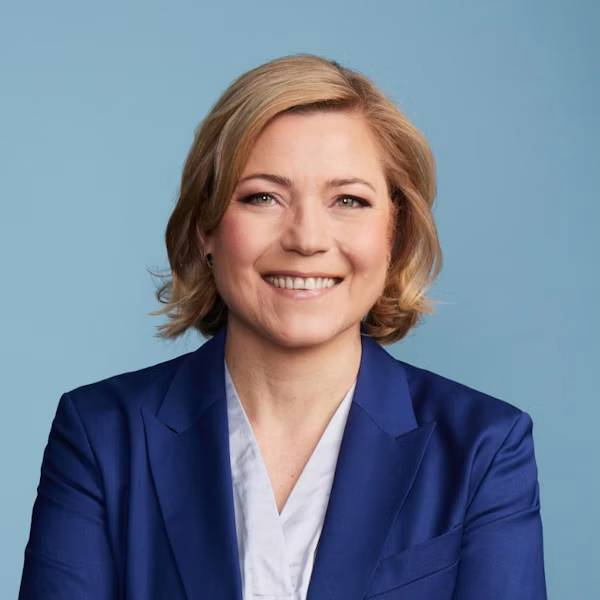

Michele Catasta é presidente da Replit, onde está moldando o futuro da criação de software por meio de agentes de IA. Em 2024, ele arquitetou e liderou o lançamento do Replit Agent, que impulsionou um crescimento de receita da empresa em mais de duas ordens de magnitude.
AcederAlan Shen é Gerente Geral da EMEA e Diretor Geral Global da MiniMax, um laboratório de modelos de IA que desenvolve soluções para linguagem, vídeo e fala, com 300 milhões de usuários em mais de 200 países. Anteriormente, liderou a estratégia regional de entrada no mercado da Alibaba Cloud e da ByteDance, e possui mestrado em Engenharia de Visão Computacional pela Universidade de Oxford.
AcederRichard Socher, CEO da Recursive e da You.com, foi Cientista-Chefe da Salesforce e CEO da MetaMind. Com doutorado em Stanford e diretor médico da AIX Ventures, sua pesquisa em PNL (Processamento de Linguagem Natural) possui quase 250.000 citações, estando entre as mais citadas na área de IA (Inteligência Artificial).
Aceder
A Sra. Virkkunen é a Vice-Presidente Executiva da Comissão Europeia para a Soberania Tecnológica, Segurança e Democracia. Ela lidera a transformação digital da UE e anteriormente atuou como eurodeputada e ministra finlandesa da Educação e da Administração Pública.
Aceder